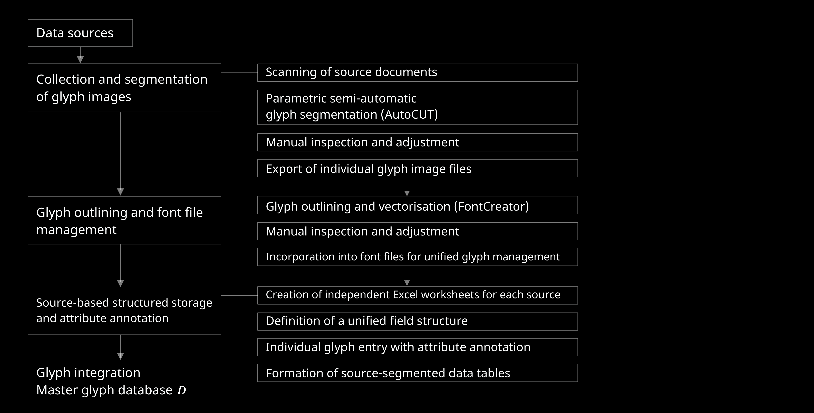
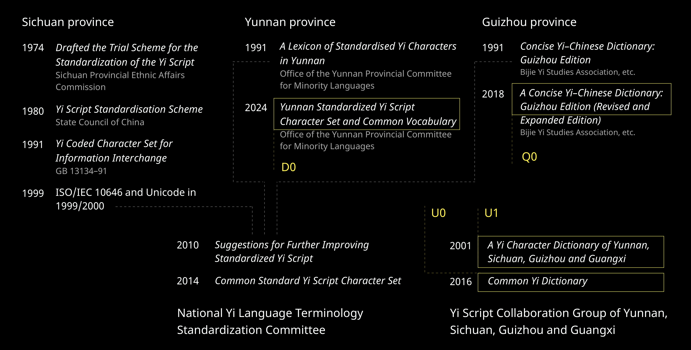
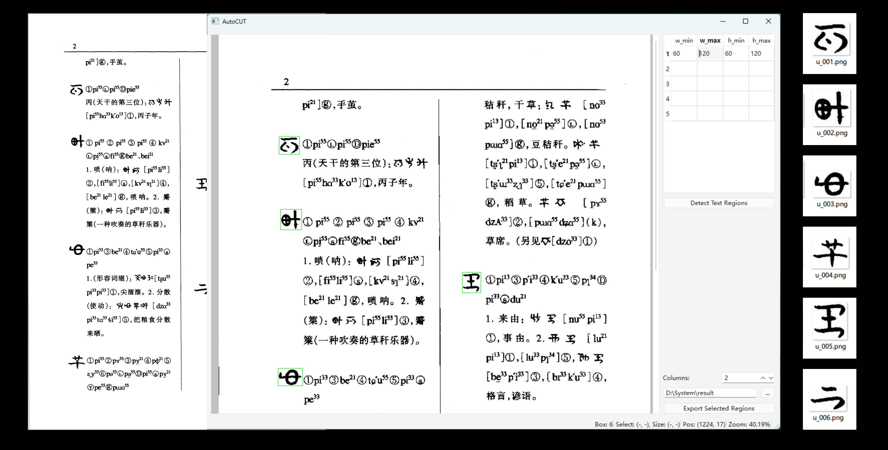
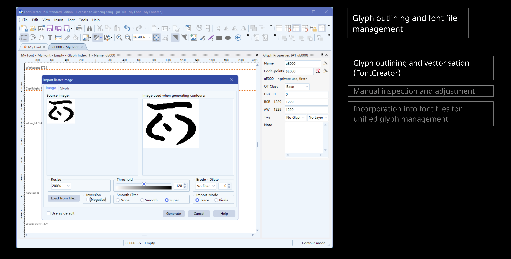
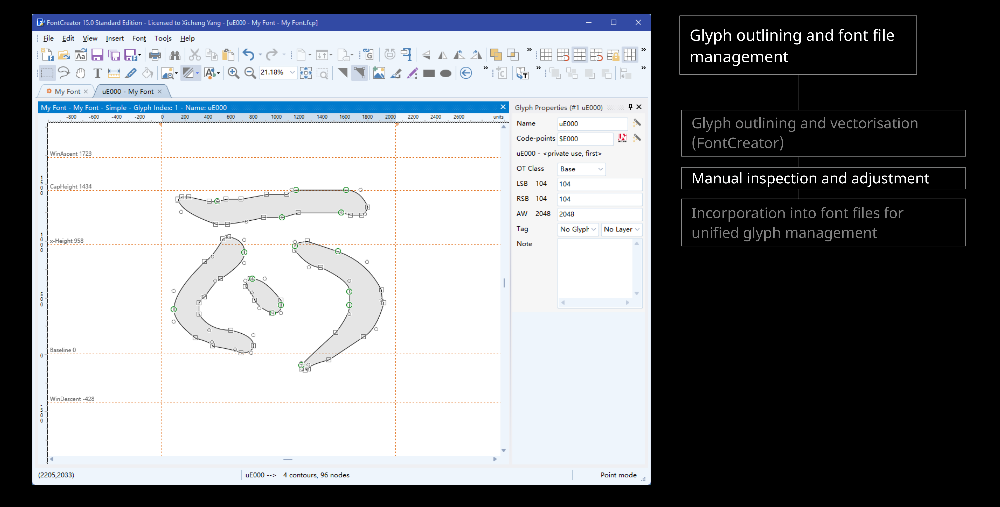
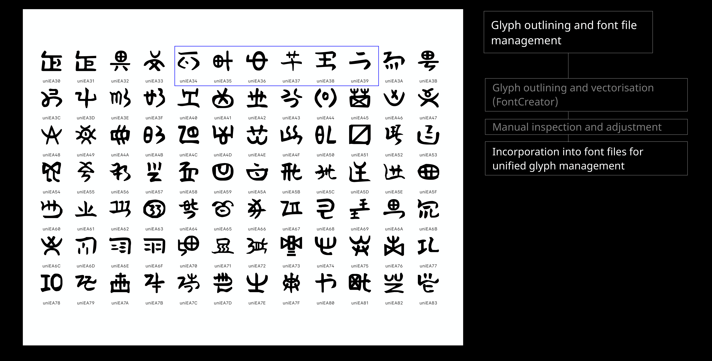
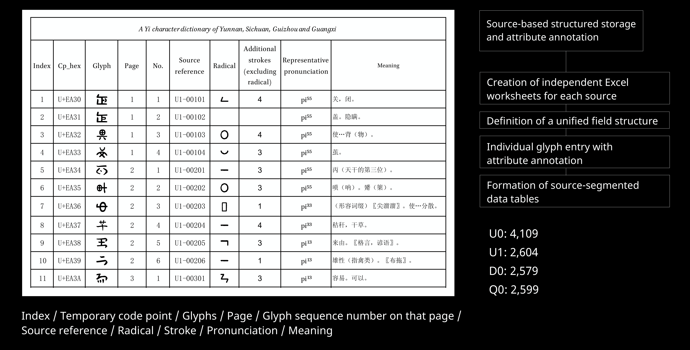
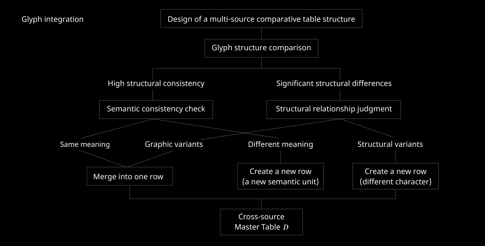
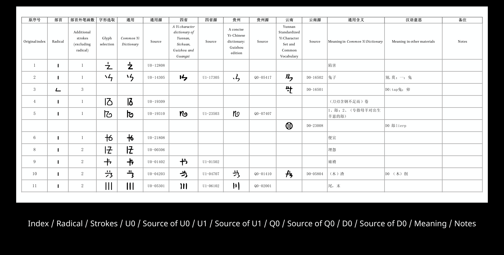
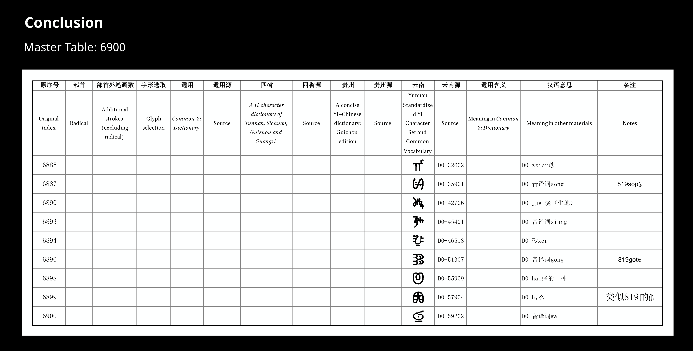

Script Encoding Research
Comparable Writing Units for Ideographic Yi
Establishing comparable writing units in a non-unified writing system: a grapholinguistic approach based on ideographic Yi
A grapholinguistic case study of the Ideographic Yi Unicode Submission Working Group's effort to turn scattered, image-based character sources into a single comparable, traceable dataset.
Background
Ideographic Yi — distinct from the already-encoded syllabic Yi script — has no standard Unicode code points. Its written record survives mainly as scanned images rather than searchable text, which limits input, search, and long-term storage.
In response, the Ideographic Yi Unicode Submission Working Group formed to move the script from scattered, non-encoded image material toward organised character data: a comparable and traceable basis for a future Unicode submission. Group Leader: Kushim Jiang. Key members: Awen Shibi, Nuo Ma Niji, Jili Mimi, Azhuo Qubu, Ke'ou Jili, Mopa Jiha, Lu Fuquan.
Source Materials
Four authoritative dictionaries, spanning Yunnan, Sichuan, Guizhou and Guangxi, were selected as the working group's comparison basis.
| Code | Source | Author / Organisation | Year | Entries |
|---|---|---|---|---|
| U0 | A Yi Character Dictionary of Yunnan, Sichuan, Guizhou and Guangxi | National Yi Language Terminology Standardization Committee | 2001 | 4,109 |
| U1 | Common Yi Dictionary | Yi Script Collaboration Group of Yunnan, Sichuan, Guizhou and Guangxi | 2016 | 2,604 |
| D0 | Yunnan Standardized Yi Script Character Set and Common Vocabulary | Office of the Yunnan Provincial Committee for Minority Languages | 2024 | 2,579 |
| Q0 | A Concise Yi–Chinese Dictionary: Guizhou Edition (Revised and Expanded Edition) | Bijie Yi Studies Association, etc. | 2018 | 2,599 |
| Total individual glyph entries | 11,891 | |||
Methodology
-
Glyph capture and vectorisation
Source documents were scanned and segmented into individual glyph images using semi-automatic tooling (AutoCUT), then manually inspected and adjusted. Each glyph was outlined and vectorised (FontCreator), inspected again, and incorporated into font files for unified glyph management.
-
Structured annotation
Each source was recorded in its own worksheet under a unified field structure, producing four source-segmented data tables:
- Index, temporary code point, glyph, page, sequence number on that page
- Source reference, radical, stroke count
- Representative pronunciation, meaning
-
Cross-source comparison
Glyphs were compared pairwise for structure. High structural consistency triggers a semantic consistency check: the same meaning merges two entries into one row as graphic variants; a different meaning opens a new row as a distinct semantic unit. Significant structural differences trigger a structural relationship judgment: a structural-variant relation still merges the row, while an unrelated structure opens a new row as a different character. The result is a single cross-source master table.









